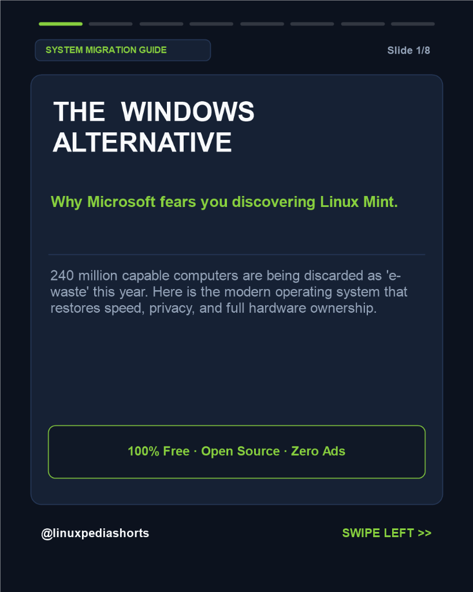
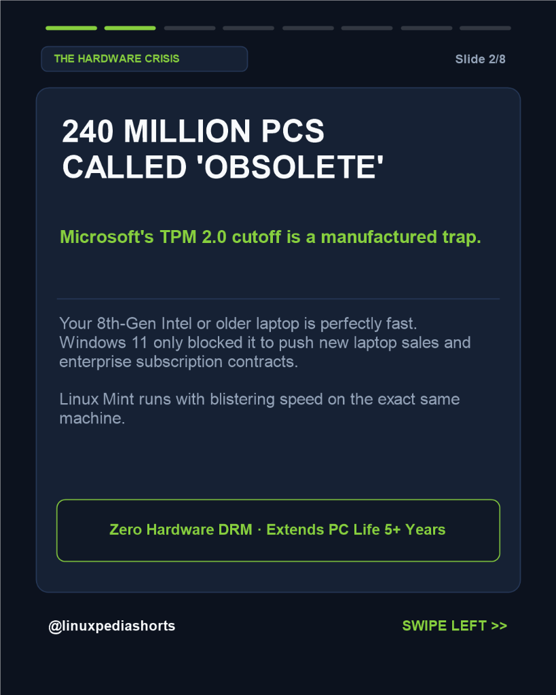
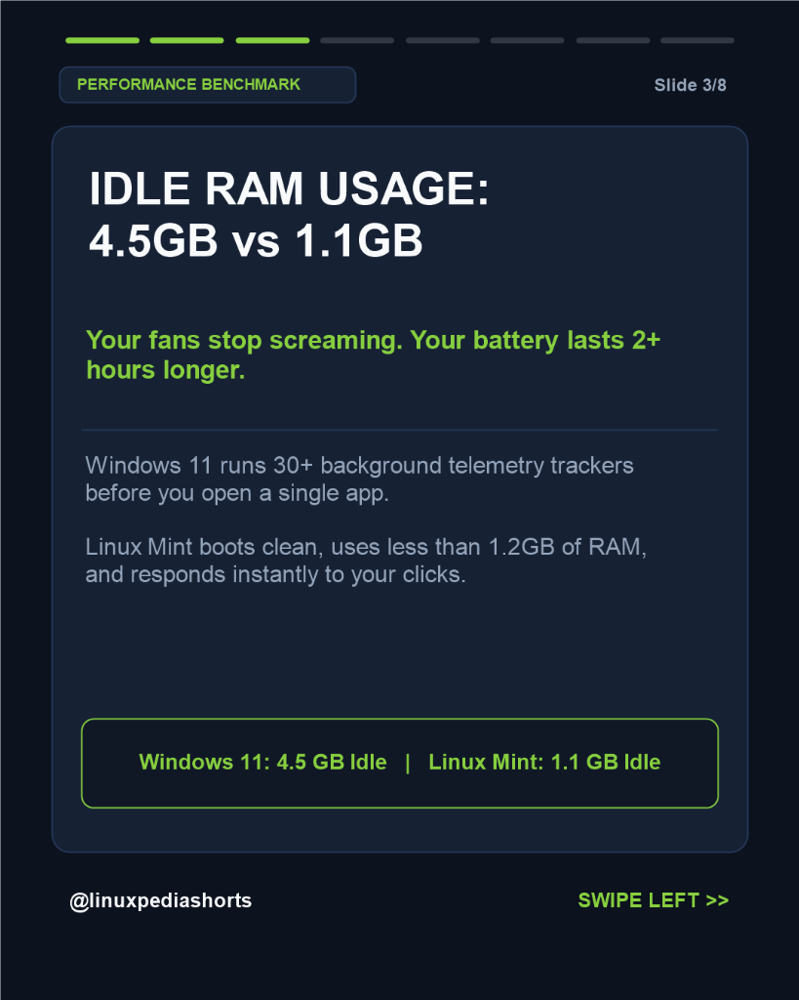
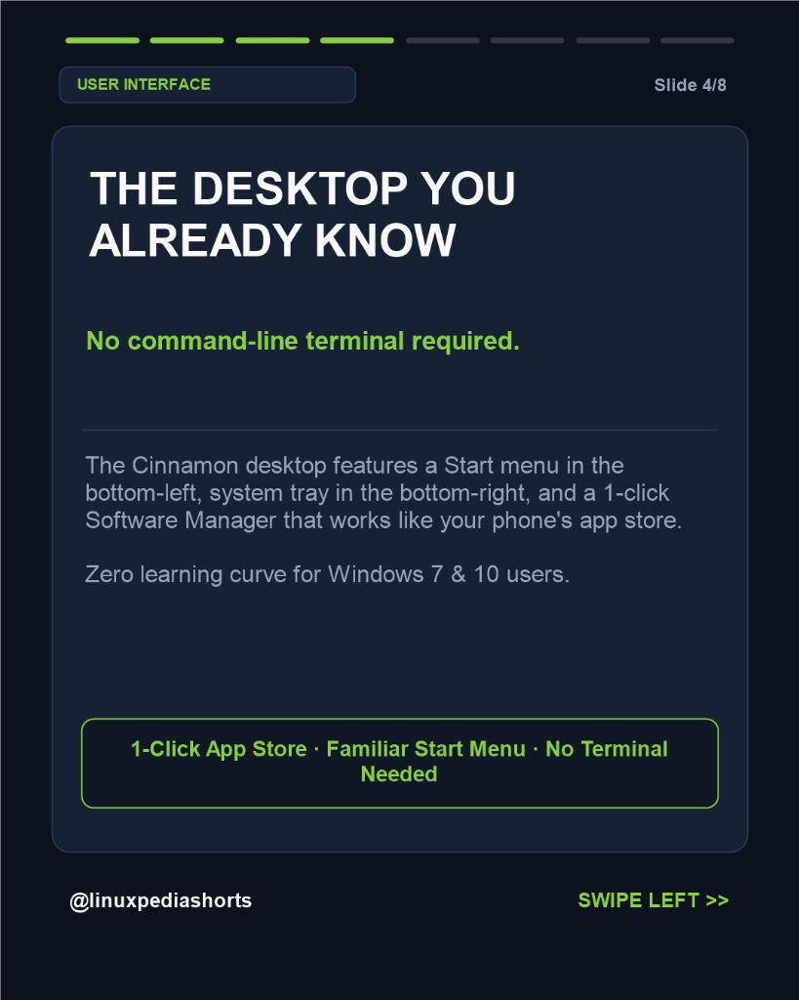
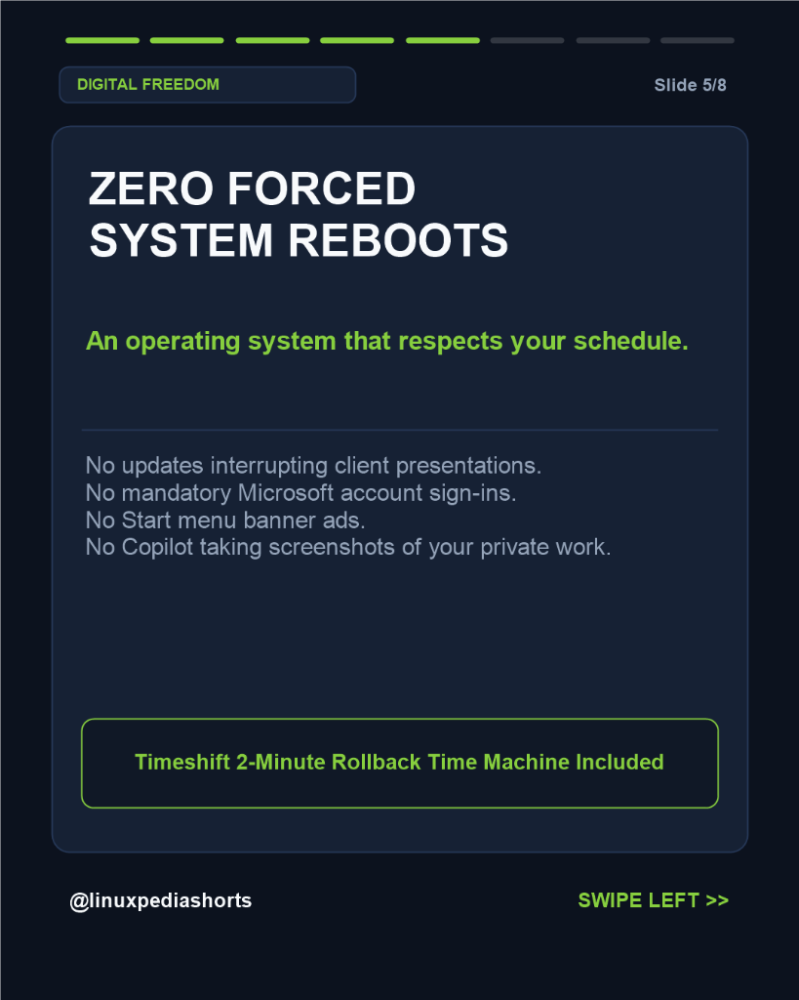
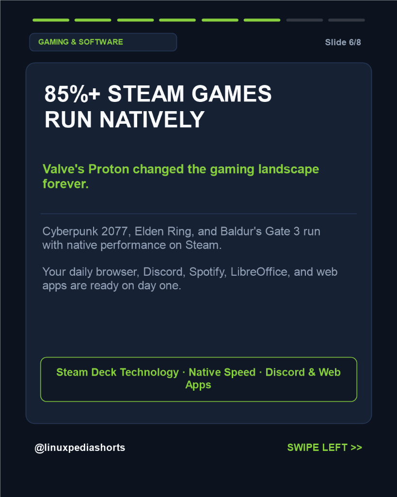
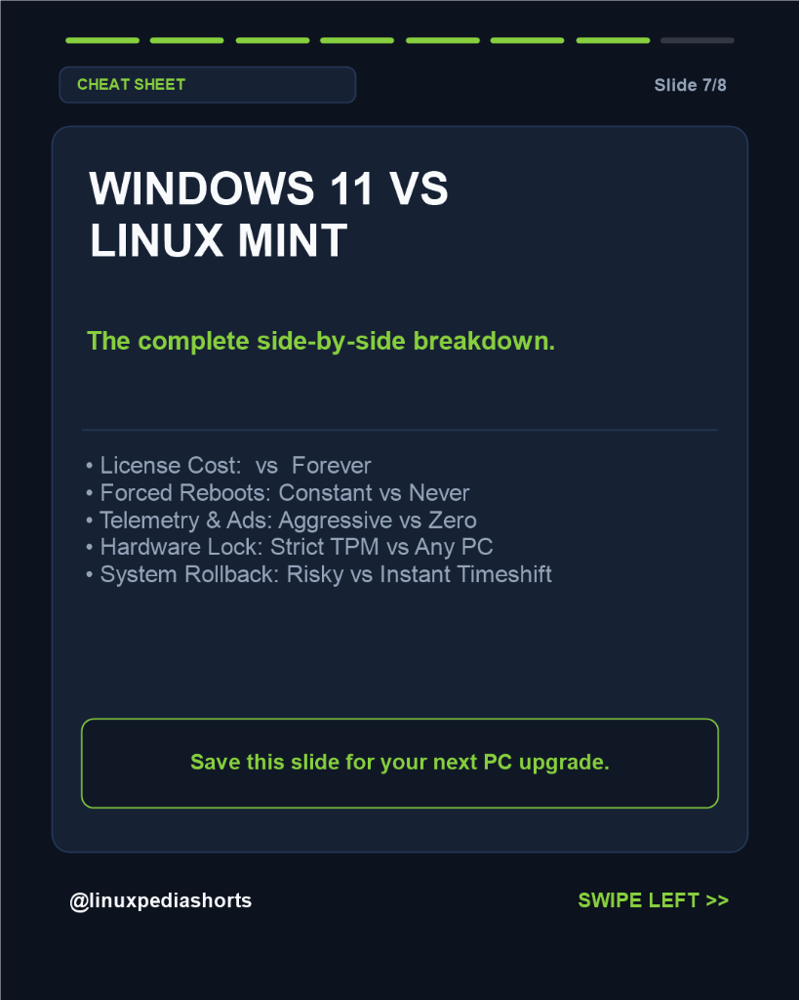
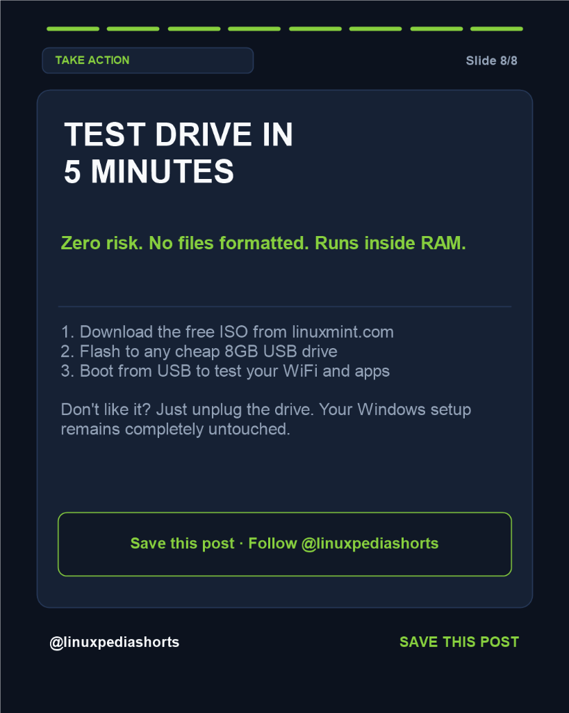

If your laptop was purchased between 2016 and 2019, it almost certainly came with an SSD, 8GB to 16GB of DDR4 memory, and a multi-core processor. That hardware is more than capable of handling 4K video streams, heavy browser workloads, programming tools, and office work.
Yet as Windows 10 ends its official security update cycle, millions of users are seeing full-screen prompts stating their PC cannot run Windows 11. The reason is not raw computing speed. It is a set of hardcoded hardware checks: TPM 2.0, Secure Boot, and a processor whitelist.

1. The Real Reason for the TPM 2.0 Cutoff
In Windows, press Win + R, type tpm.msc, and hit Enter. On an unsupported machine, you will see either "Compatible TPM cannot be found" or a specification version showing 1.2 instead of 2.0.

TPM stands for Trusted Platform Module. It is a cryptographic microcontroller used for hardware encryption keys, BitLocker, and enterprise device compliance. While useful in high-security corporate networks, the lack of a TPM 2.0 chip has nothing to do with whether your CPU can run a web browser or calculate spreadsheets.
Linux Mint does not care about your TPM version. It installs and runs on standard x86-64 hardware regardless of motherboard keys or enterprise security restrictions.
2. Idle Memory and Thermal Benchmarks: 4.5 GB vs 1.1 GB
The clearest difference between Windows 11 and Linux Mint shows up on Task Manager versus a Linux system monitor immediately after boot.

On a clean, default installation of Windows 11 Home or Pro, open Task Manager. Before you launch a single application, the following background services are already running:
SearchHost.exeand Windows Indexer (indexing drives continuously in the background).Widgets.exe(pulling news, sports, and weather feeds into your taskbar).StartMenuExperienceHost.exe(loading app recommendations and web suggestions).MsMpEng.exe(Microsoft Defender Antimalware Service executable scanning memory).- Telemetry and diagnostic collectors reporting usage data.
On a laptop with 8GB of total RAM, Windows 11 typically takes 3.8 GB to 4.8 GB simply sitting at the desktop. That leaves only 3GB to 4GB for your browser, documents, and tools before the system begins paging memory to the SSD.
Now look at Linux Mint (Cinnamon Edition). Boot the machine, open a terminal, and run:
free -h
A fresh boot of Linux Mint uses between 0.9 GB and 1.1 GB of RAM. Because your CPU is not running dozens of telemetry threads, your cooling fan drops to silent speeds, chassis heat drops significantly, and battery discharge rates measured via powertop show a noticeable drop from 14 Watts on Windows down to 9 Watts on Linux Mint.
3. The Interface: Zero Terminal Commands Needed
Many users hesitate to switch because they think Linux requires typing commands into a black terminal window all day. While the terminal is a powerful tool for sysadmins, you do not need it to use Linux Mint as a daily operating system.

The Cinnamon desktop keeps the traditional workflow that millions of users rely on:
- Start Menu: Located in the bottom-left corner. Type to search installed software, recent files, and system preferences.
- System Tray: Located in the bottom-right corner with volume controls, network status, battery percentage, and calendar.
- Software Manager: A graphical app store. Search for Chrome, VLC, Spotify, Steam, or VS Code and click "Install". The system downloads and verifies packages automatically.
- Driver Manager: Detects proprietary Wi-Fi chipsets (like Broadcom) and dedicated NVIDIA graphics cards automatically, allowing you to select and install verified drivers with one click.
4. Operating System Control: Updates, Accounts, and Telemetry
Windows 11 increasingly insists on cloud integration and automated reboots. For many working professionals, this creates daily friction:

- Update Control: Linux Mint never restarts your machine without your explicit consent. Security updates patch in the background while you work, and you reboot whenever it fits your schedule.
- No Forced Microsoft Account: You create a local account with a local password. No email address, phone number, or online verification is required.
- No Built-in Ads: There are no promoted apps in the Start menu, no suggested edge notifications, and no shopping pop-ups in the search tray.
- Snapshot Rollbacks with Timeshift: Linux Mint comes pre-installed with Timeshift. It takes incremental rsync snapshots of your operating system. If you install an incompatible driver or tweak a setting that breaks your display, you can boot into a snapshot from yesterday and restore everything in two minutes.
5. Gaming and Software: The Honest Truth
Let us be completely objective. No operating system transition is 100% identical, and understanding what works and what does not prevents surprises.

What Works Out of the Box:
- Steam Gaming via Proton: Valve has invested years into the Proton compatibility layer for the Steam Deck. Over 85% of Windows games in the Steam catalog run with near-native performance. Titles like Cyberpunk 2077, Elden Ring, Baldur's Gate 3, GTA V, and Hades run without manual tweaks. You can verify any game's rating at ProtonDB.com.
- Daily Browsing & Media: Google Chrome, Brave, Firefox, Edge, Spotify, and VLC run natively with full hardware acceleration.
- Coding and Development: VS Code, Git, Python, Docker, Node.js, and C/C++ compilers are first-class citizens on Linux.
What Does NOT Work (The Honest Trade-Offs):
- Kernel-Level Anti-Cheat Games: Games that require root-level Windows drivers (such as Valorant with Vanguard, Fortnite, or recent Call of Duty titles) will not run on Linux. If these specific games are your primary hobby, you must keep a Windows dual-boot partition.
- Adobe Creative Cloud Desktop: Native desktop Photoshop, Illustrator, and Premiere Pro do not run natively on Linux. Many users use GIMP, Krita, Inkscape, Blender, or DaVinci Resolve, or access web-based design tools like Figma and Canva.
- Complex Microsoft Excel VBA Macros: LibreOffice Calc opens and edits standard spreadsheets with high fidelity, but proprietary VBA macros written for corporate Windows Excel may require the Microsoft 365 web version.
6. Windows 11 vs Linux Mint: Direct Comparison Table

| Comparison Metric | Windows 11 | Linux Mint (Cinnamon) |
|---|---|---|
| License Cost | $139+ (retail) or bundled into hardware price | Free & Open Source forever |
| Idle RAM Footprint | 3.8 GB to 4.8 GB | 0.9 GB to 1.1 GB |
| Forced Reboots | Yes (updates can interrupt workflows) | Never (user chooses when to reboot) |
| Hardware Compatibility | Requires TPM 2.0 & 8th-Gen Intel / Ryzen 2000+ | Runs on virtually any 64-bit computer |
| Telemetry & Ads | Diagnostic telemetry and Start menu suggestions | Zero telemetry, zero advertisements |
| System Rollback | System Restore (often inconsistent) | Timeshift rsync snapshots in 2 minutes |
7. Step-by-Step: Test Drive Linux Mint in 5 Minutes (Zero Risk)
The best feature of modern Linux distributions is the Live USB environment. You do not need to install anything on your hard drive to test your hardware.

Quick Setup Guide:
- Download the ISO: Head to linuxmint.com and download the 64-bit Cinnamon Edition (roughly 2.9GB).
- Download Rufus: Go to rufus.ie and grab the free portable version.
- Flash the USB: Plug in any 8GB or larger USB stick (backup any data on the USB first). Open Rufus, select your USB, choose the Linux Mint ISO, leave the partition scheme as GPT (or MBR for older legacy BIOS), and click START.
- Boot into the Live Desktop: Restart your laptop and immediately tap your boot menu key (
F12on Dell/Lenovo,F9on HP,F11orF8on Asus,F12orEscon Acer). Select your USB drive. - Test Everything: Connect to your Wi-Fi network, test YouTube playback in Firefox, verify your trackpad gestures, and test your sound card.
If you like the experience and want to make the switch permanent, click the "Install Linux Mint" shortcut on the live desktop. You can choose to replace Windows entirely, or install Linux Mint alongside Windows in a dual-boot setup where you pick which OS to boot every time you power on.
Related System Administration Guides
Ready to take control of your Linux workstation? Explore our foundational engineering tutorials:
- Linux File Permissions Made Simple: chmod, chown, and Octal Math Demystified
- Why NVIDIA Drivers Break Linux (And How to Fix the Dreaded Black Screen)
- 5 Linux Commands That Can Destroy a Server (And How to Protect Yourself)
- The Linux Server Hardening Checklist: From Fresh Install to Production Security
Final Thoughts
Do not let a synthetic hardware requirement turn your functional laptop into electronic waste. Modern computers have plenty of processing power to run for years when freed from excessive background telemetry and vendor lock-in. Testing Linux Mint costs nothing, takes five minutes, and gives you complete ownership over your computer again.